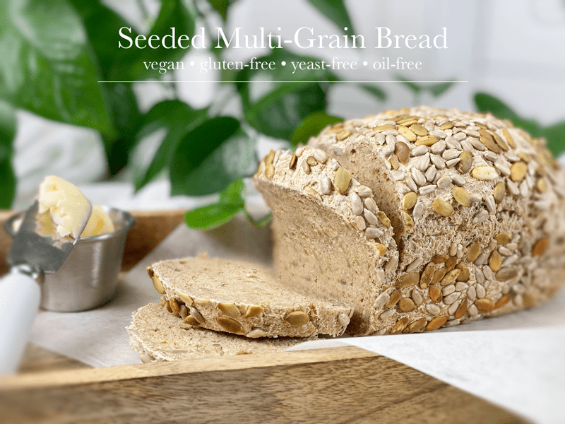
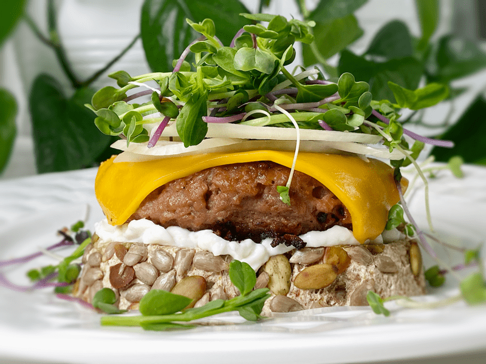

Seeded Multi-Grain Bread | Baked | Vegan | Gluten-Free | Yeast-Free
Today, I’m sharing my latest daily bread recipe with you. It’s a hearty multigrain sandwich bread, filled and topped with a lovely, crunchy, toasted seed crust. I didn’t go crazy on the amount of seeds that I used; I already had some soaked and dehydrated pumpkin and sunflower seeds, and for some reason, the simplicity of the two sounded very appealing. They enhance the flavor and add the perfect crunch to complement the soft and spongy center of the loaf. If you don’t have one or both seeds on hand, you can substitute them with any other seed or a combination of nuts.

With the bread baking in the oven, I methodically started doing the dishes. Lost in suds and sticky measuring spoons, I mentally logged all my accomplishments of the day. As I catalogued each task, I realized that it was New Year’s Eve. Silently, I started surfing through the year 2020. As many of you know, I lived in Alaska for 28 years and I remember reading and seeing photos of the 1958 earthquake that generated a 100-foot high wave, making it the tallest tsunami ever documented. When the wave ran ashore, it snapped trees 1,700 feet upslope!
That earthquake, that wave, resembles how I view 2020. It may have started out as a little capillary wave (a ripple) but it wasn’t long before it grew in size and speed, promising to demolish everything within its path. Despite the layers of anguish that 2020 piled on, I still feel blessed. I don’t have COVID, my loved ones are safe, I adore those who live under our roof (Bob and Milo) and I have an amazing outreach through Nouveauraw that blesses me daily.
I am not a New Year’s resolution person. I can’t project or force the future any more than I can undo the past. So, I will continue to power through my days with the desire for deeper self-growth, a better balance of self-care, fulfill the craving to continually walk in love, and press onward in making delicious and nutritious foods. I truly hope that 2021 is a better year, but I wish that every year. Dishes are done, and so are my musings. Now, if you don’t mind, I’m going to dive into this bread!

Tonight’s dinner is presented above. Starting from the bottom, we have a thick slice of Seeded Multi-Grain bread, vegan mayo, vegan vegetable pattie, vegan sliced cheese, onions, and microgreens. It was heavenly! This bread stood up beautifully. It didn’t fall apart or get soggy. I was planning on placing another piece on top, but as you can see, I got stack-happy and I wouldn’t have been able to wrap my mouth around it. So, open-face it is!
Baking Vessel Options
Free-Form Loaf
- A free-form loaf is typically shaped round or oblong (baguette). It rises and bakes without borders. If you want to get all fancy-sounding, a round loaf of bread is also called a boule.
- This form of bread doesn’t require a bread loaf pan. All you need is a baking/cookie sheet lined with parchment paper. Not all bread recipes work with this style of baking, but this one sure does.
- I prefer this style because it is more rustic and forgiving if it doesn’t come out to an exact shape.
Bread Pan Loaf
- When using a bread pan, it helps to create straight sides (think sandwich-style bread) as it constrains the bread from expanding outward.
- You can use loaf or cake pans, depending on the shape you want. Regardless of what pan you use, be sure to line it with parchment paper.
Dutch Oven Loaf
- Baking bread in a dutch oven creates a beautiful crust.
- While baking, the dutch oven traps steam, which allows the bread to rise more fully before forming the crusty exterior.
- Just like any other bread-baking pan, you will want to line it with parchment paper.
Burger and Sandwich Ideas
Tips and Techniques
- I am a big fan of using a kitchen scale when making bread. They are well worth the investment. To read more about the subject matter and which ones I recommend, click (here). But in the meantime, the best way to measure the dry ingredients is to spoon them into the measuring cup and level with the back of a knife.
- The weight measurement for the sunflower seeds I provided is for soaked and dehydrated sunflower seeds. So if you are using raw unsoaked/dehydrated sunflower seeds, go by the cup measurement since they will weigh more than the ones I used. Sorry to make that confusing.
- The crust on this bread doesn’t reach a dark golden color, so don’t use the color of the bread as a done indicator.
- Always make a 1/4″ deep score mark down the center of the loaf. When the dough starts to heat, it starts to expand, causing the bread to rise. If the dough is not scored then it will crack in the most unexpected places (because the air is trying to get out).
- Have you ever noticed how sunflower seeds turn a little green in baked goods? It turns out that sunflower seeds contain chlorophyll, also known as chlorogenic acid. This acid reacts with the baking powder/soda in a recipe when heated and turns green. I noticed this just around the surface of the sunflower seed. The loaf itself didn’t turn green. So, don’t mistake this for your bread going bad.
I would love to hear from you down below in the comment section. May your days be full and blessed, amie sue
 Ingredients
Ingredients
Topping
- Extra sunflower and pumpkin seeds
Preparation
Psyllium Gel
- Quickly whisk the water and psyllium husk powder in a mixing bowl. It will instantly start to gel, which is to be expected. Set aside while you prepare the remaining ingredients, so it can thicken.
- Preheat the oven to 350 degrees (F).
- Line a baking sheet with parchment paper, sprinkled with a little extra flour.
Dry Ingredients
- In the mixing bowl that we are going to knead the bread in, whisk together the oat flour, sorghum flour, buckwheat flour, arrowroot, sunflower and pumpkin seeds, baking soda, baking powder, and salt.
Mixing and Baking the Dough
- Add the psyllium gel and drizzle the maple syrup around the bowl.
- Using either a hand mixer or a free-standing mixer with dough attachments, knead for 5 minutes (set a timer on your phone) to ensure that it gets kneaded enough (don’t we all love feeling needed?).
- Start the mixer on low until the flour is folded in, then turn it up one speed. If you start off at too high a speed, the flour will jump out of the bowl.
- Shape the dough into a round or oblong shape and place it on the baking sheet.
- Score the top of the bread with the tip of a sharp knife, going no more than 1/4″ deep.
- Bake on the center rack for 50-60 minutes.
- Take the loaf out of the oven and turn it upside down. Give the bottom of the loaf a firm thump! with your thumb, like striking a drum. The bread will sound hollow when it’s done.
- When it’s done baking, slide it onto a cooling rack and wait to cut when cool.
Dutch Oven Method (if using)
- Place the empty dutch oven and lid inside the oven and preheat the oven to 350 degrees (F).
- Once preheated and ready for baking, remove the dutch oven and place it on the stove. Be careful not to touch the dutch oven or lid without oven mitts, because it will be hot! Place the dough on a piece of parchment paper and transfer it into the HOT dutch oven. Cover with the hot lid and bake for 50 minutes.
- Remove hot lid and bake another 10 minutes.
- Use the parchment paper to lift the bread out of the dutch oven and cool on a wire rack until nearly room temperature before slicing.
Storage
- Once the bread has thoroughly cooled, you can wrap it. It should last up to roughly 5 days.
- Brown paper bag: This will better protect your loaf and allow for good air circulation, meaning that your crust won’t get soft. Some people claim that a sliced loaf stored cut-side down in a paper bag will stay the freshest.
- Plastic bag: If you want to avoid staling at all costs, go with a plastic bag. Make sure to get as much air out as possible before sealing. Your crust will soften, but your bread won’t dry out or harden prematurely. Make up for unwanted softness with toasting.
- Tea towel: Wrap the bread in a tea towel, then place it in the bread box.
- Fridge: Whether you store it in the fridge is up to you. Many people feel that bread in the fridge turns stale quicker. If you’re not going to finish a loaf in the first few days after baking it, you might want to freeze it until you’re ready to eat it.
- Freezing: Rather than freezing the loaf as a whole, preslice it and place wax or parchment paper in between each slice before sliding into a freezer-safe container. That way you can pull out 1,2, or as many slices as you want.
© AmieSue.com